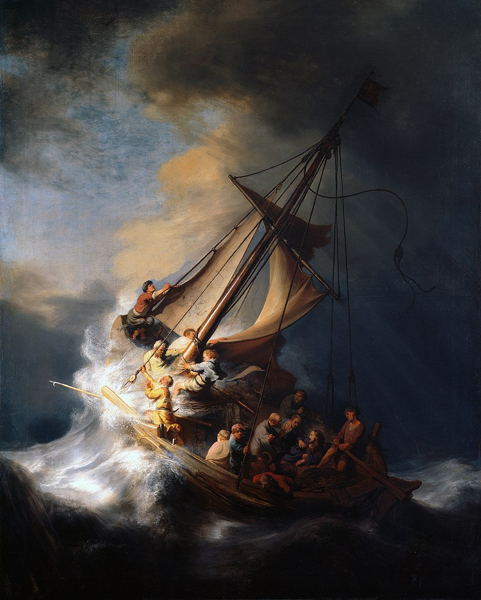
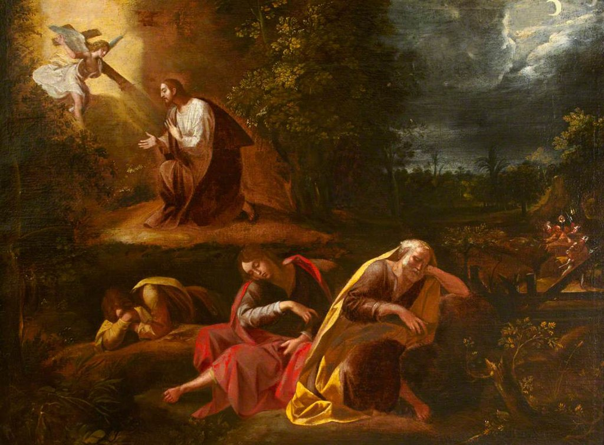
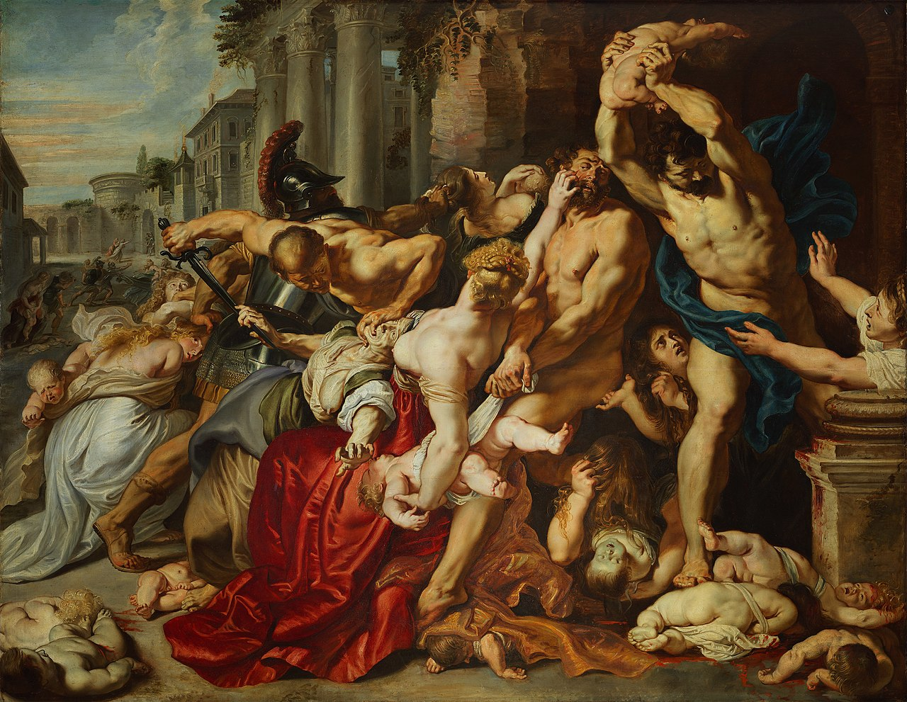
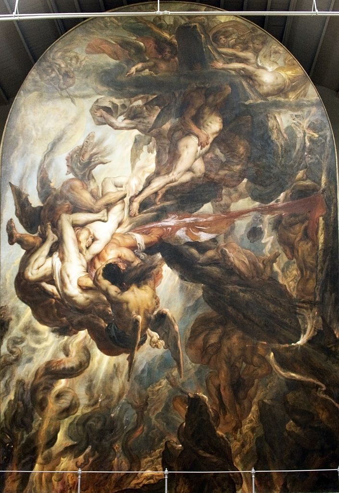
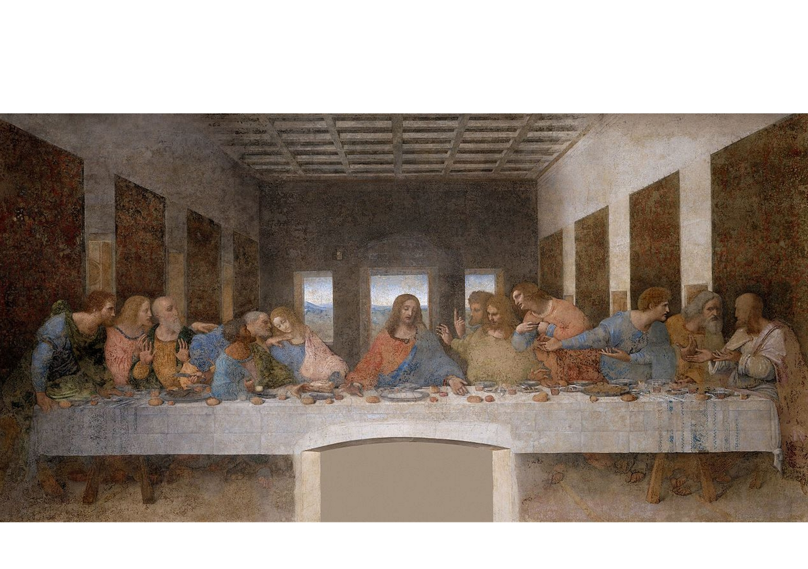
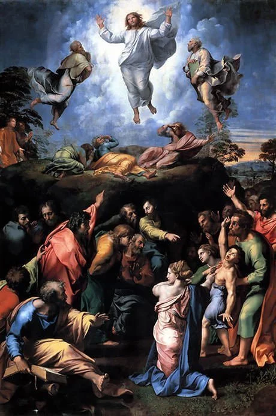
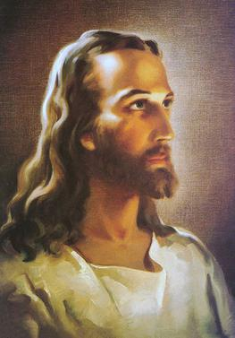
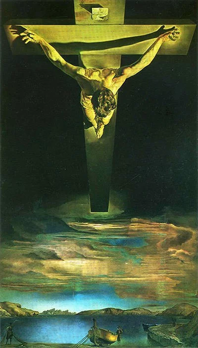

Christ in the Storm on the Lake of Galilee by Rembrandt van Rijn (1633)
What follows is a gallery of biblical stories depicted in art.
This first image concerns the story of Jesus calming a storm in the Sea of Galilee.

The Agony in the Garden by Giuseppe Cesari (1568-1640)
Jesus was arrested in this garden, the night before his crucifixion. (Matthew 26 and Mark 14 revolve around this scene for instance)

The Massacre of the Innocents (1611-12)
This painting depicts the slaying of innocent civilians in Bethlehem (Gospel of Mathew, chapter 2).

The Revolt of Hell Against the Heavens by Anthoine Wiertz (1841)
While his name may sound unfamiliar, The Belgian Artist has an entire museum dedicated to him.

The Last Supper by Leonardo Da Vinci (1495–99)
One of Da Vinci's most famous works. Almost all clusters in this painting combine into a triangular shape.

Transfiguration by Raphael (1520)
Raphael, Michelangelo and Da Vinci are the three greats of the Renaissance. They all depicted the bible from different perspectives, one not worse than the other.

The Head of Christ by Warner Salman (1940)
A more modern, yet still classic painting of a biblical element.

Christ of Saint John of the Cross by Salvador Dali(1951)
Yet another (and last) modern depiction of a biblical scene.
For this painting, Dali was inspired by a drawing by the fellow Spaniard John of the Cross from the 16th century.